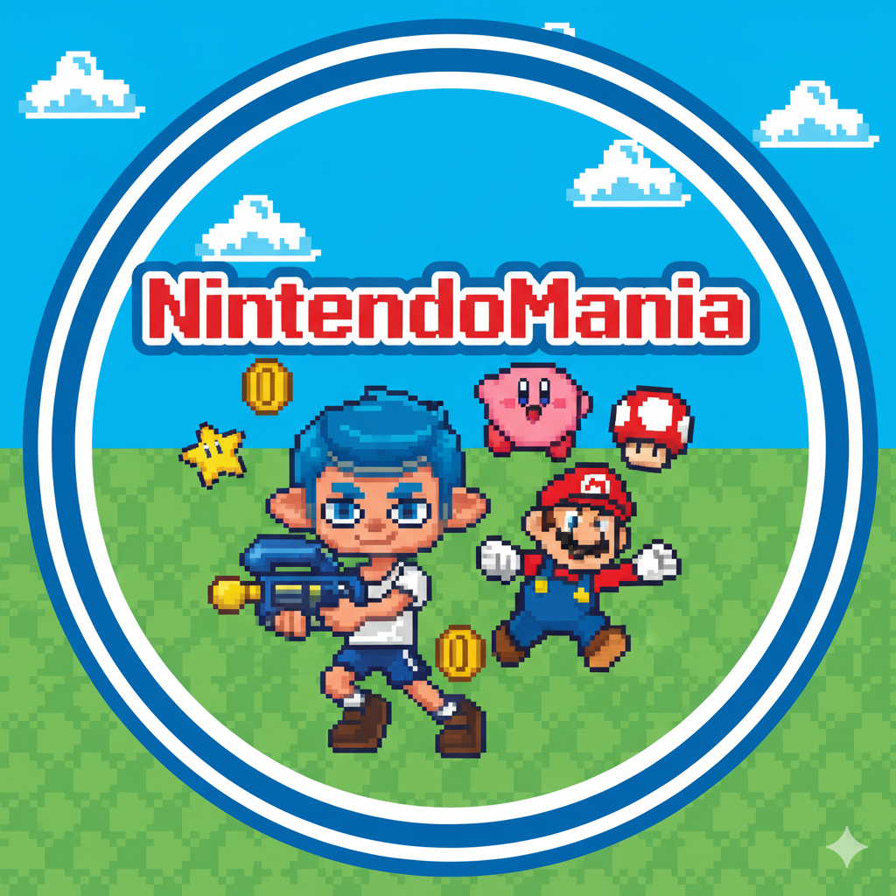

Tus favoritos
¿Eres un fanático de Nintendo?
Si es así, aquí podrás encontrar una colección de tus juegos favoritos junto con su puntuación y reseña.

¿Eres un fanático de Nintendo?
Si es así, aquí podrás encontrar una colección de tus juegos favoritos junto con su puntuación y reseña.